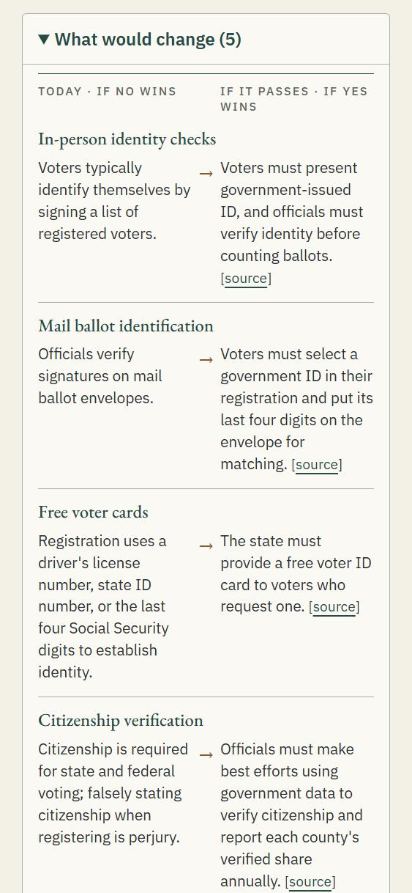

At the ballot box, most of us are short on time and hear only one side
Ballot info comes from news, social media, friends, group chats and ads, often leaning one way or paid for
Ballot issues rarely come up day to day, so at voting time many measures are unfamiliar
"Where do I even begin?" Then the official guide alone: 2 h 27 min in California, 51 min in Massachusetts, 46 min in New York
Democracy works best when we decide after a fair hearing of each side at its best, not its weakest
"The strongest argument isn't always your own."
Strawman vs. steelman
Strawman (what you often hear):
"Opponents just don't care about election fraud."
Steelman (what our card says):
"Opponents argue added ID requirements would keep some eligible citizens' mail ballots from counting because of mistakes or missing information."
California Prop 39 · the same for the Yes side
Steelman Ballot2
The app
Address in, ballot out, about a minute per measure
"Your ballot in 60 seconds": the matched address, districts and counts
Each side's steelman, No left and Yes right, with a verified badge

What would change: today vs. if it passes, every claim sourced
Steelman Ballot3
What is new
A tested steelman for both sides, on demand
Official guides, Ballotpedia, VOTE411, news guides and chatbots summarize or endorse. None tests whether each side's case is its strongest, fairest version.
1 · The steelman test
Each side argued so well its own supporters would sign it as their best case. The AI Challenger plays a committed supporter and scores 1-5; both sides must score 4+, and a swap test checks that neither reads warmer.
This is the idea the app is named after.
2 · Fair by construction
On the merits only: what a change would do, never the other side's motives, donors or party.
Facts apart from arguments: Fact, Estimate or Perspective, each sourced.
Equal treatment: same space and tone; No left, Yes right; no red or blue.
Steelman Ballot4
The AI agents
The AI Writer drafts. The AI Challenger tries to break it.
AI Writer on gpt-6-astra, because writing a fair case from legal text is the hard step (in an early test, a cheaper AI Writer's cards passed 1 in 3 even after rewrites; astra's now pass 28 of 28). AI Challenger on gpt-6-luna: a different model, about 100× cheaper, no measurable loss.
Steelman Ballot5
One real run · California Prop 39 (voter ID)
The AI Challenger caught a missing argument and a too-broad claim
1
Map: 1315 10th St, Sacramento → CD 7, SD 8, AD 6 in 0.7 s; the official guide lists 14 propositions
2
AI Writer reads 3 official pages (summary, Legislative Analyst, arguments) and drafts the card
3
AI Challenger: fail. Yes side 3/5: "omits a prominent merits argument… mail-ballot signature process can delay results." No side's "officials already verify voters" is too broad
4
AI Writer rewrites with the numbered fixes
5
AI Challenger: pass. Both sides 4/5, swap test passed, no fidelity problems
5 model calls · 41,166 tokens · $0.25 · 96 seconds, then reused by every voter at no AI cost.
The corrected fact is now evidence line 2: mail signatures are checked, in-person generally not
Cost cutting that helped: card v3.1 used 32% fewer tokens and covered more top points (92% → 99%). That hurt: a cheaper AI Writer was 98% cheaper but less accurate (96% vs 100% of claims supported), so it was rejected.
Steelman Ballot7
Safety
Protect trust, privacy and the budget
Attacks
Official-site allowlist; robots.txt respected
Hidden text stripped; pages marked untrusted
Injection words flagged: fired on 10 real cards, never leaked
No address in URLs or logs
Malfunction
Claims must cite a page actually read; quotes verbatim
0 contradicted claims in graded sample
Max 3 rewrites, else "unverified" badge
Wrong address match flagged
Overspending
Public site is snapshot-only: visitors can't trigger AI
Per card ≤20 calls, ≤150k tokens
Batch budget; clean stop on quota (it happened: the Portkey cap)
Wrong-ZIP match flagged
10 of 10 safety tests pass (128 of 128 overall), offline, with no model calls.
Steelman Ballot8
Impact
A clear place to start, and 68% less reading time
Nov 3, 2026 ballot
Measures
Without the app official guide text
With Steelman Ballot full briefings
Time saved
% saved
California
14
2 h 27 min
40 min
1 h 47 min
73%
Massachusetts
9
51 min
25 min
26 min
51%
New York (NYC)
5
46 min
13 min
33 min
72%
Average per ballot
~9
1 h 21 min
26 min
55 min
68%
Beyond time: one address gives one organized place for every measure on your ballot, each side argued at its best: from "where do I even begin?" to an informed choice. (Like-for-like: words on the official pages vs. words on the cards, at the same reading speed.)
Fair (AI-checked) and accurate: every measure card passed the AI Challenger's steelman test (14/14, 9/9, 5/5). California accuracy vs. the nonpartisan Legislative Analyst: 100% of claims supported, 18/18 yes/no/cost correct.
"Democratizing access to information that's unbiased, and letting voters understand their issues and meet them where they are, is something we really need. Steelman Ballot does just that. … I wish I had this for the recent election."
Tester who works in politics · 9 of 12 tester suggestions shipped · Spanish and Chinese confirmed by native speakers
Steelman Ballot9
Limits and next steps
Honest limits, and the next month
Doesn't work yet
Coverage: 3 states; a look-back demo; no local measures; races thin; evidence details in English
AI can err: sources linked and issues reportable, but the accuracy test is small and California-only
Timeliness: most useful in the weeks before an election
Next month
More coverage: all 50 states, then local via election-office data partnerships; more languages
Real-world study: usual research vs. the app, plus "can you state the other side's best case?"
Issues of the day: an evergreen resource on all sides of major issues, between elections
Think more deeply. Vote more thoughtfully.
Steelman Ballot10
← → or space to move · F11 full screen · Ctrl+P prints one slide per page
 "Your ballot in 60 seconds": the matched address, districts and counts
"Your ballot in 60 seconds": the matched address, districts and counts Each side's steelman, No left and Yes right, with a verified badge
Each side's steelman, No left and Yes right, with a verified badge The corrected fact is now evidence line 2: mail signatures are checked, in-person generally not
The corrected fact is now evidence line 2: mail signatures are checked, in-person generally not Wrong-ZIP match flagged
Wrong-ZIP match flagged